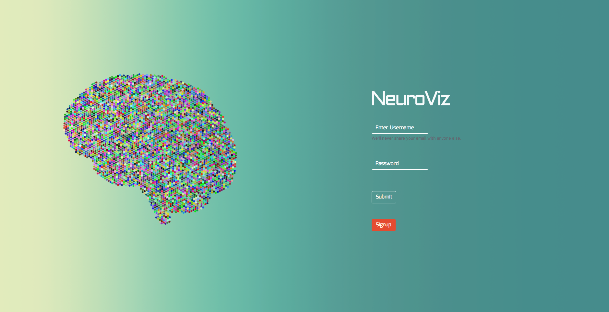
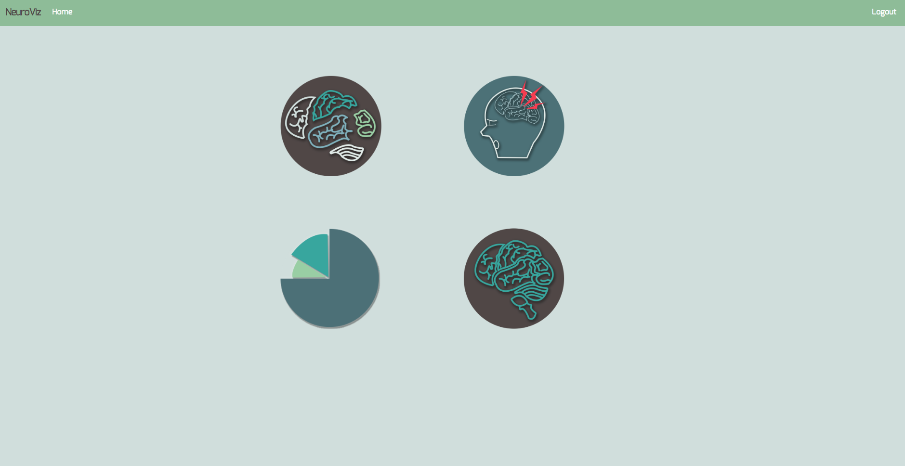
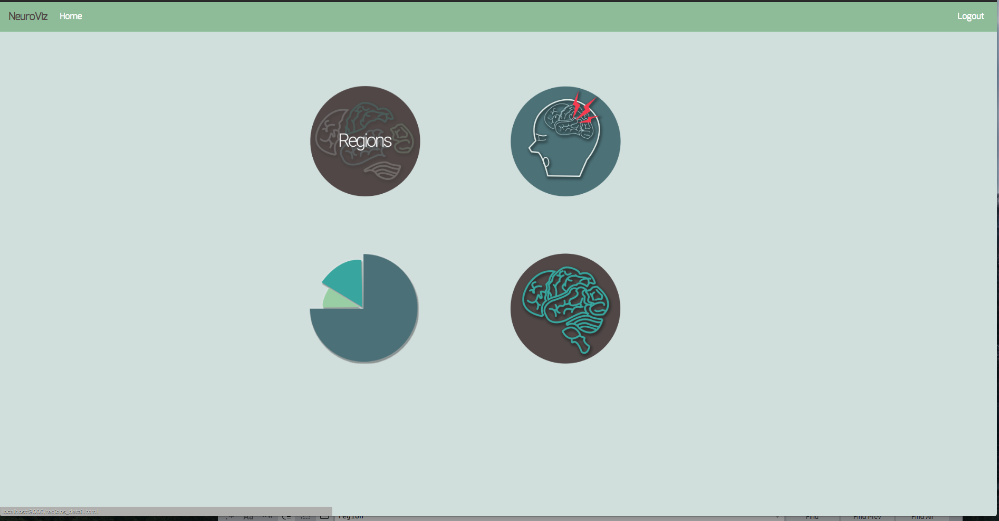
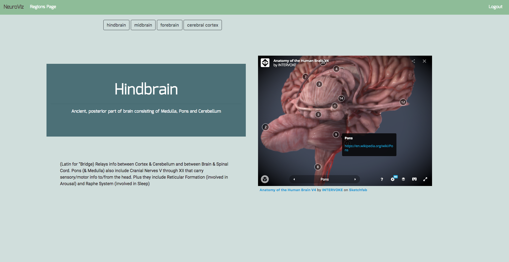
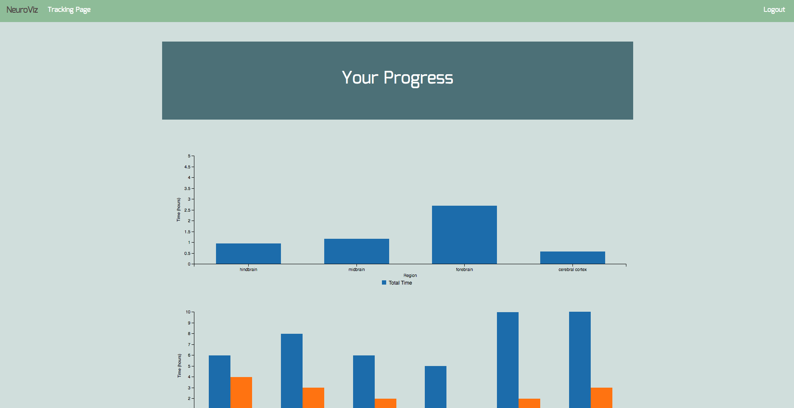

Augmented Connection
Augmented Connection is an AR application in pervasive healthcare, intended to better connect healthcare providers with patients who speak foreign languages, or are otherwise unfamiliar with medical terminology. Developed on the Microsoft Hololens, Augmented Connection provides a heads-up-display for doctors and patients in order to facilitate on the spot translation, along with keyword detection with details regarding medical descriptions pulled from the conversation.
Tech Stack - Microsoft Hololens, Azure API, Amazon Natural Language Prddocessing API, Bluetooth Audio Feeds, Unity/C#


Prototypes


NeuroViz
NeuroViz is an informatics-based study aide for Cognitive Science students. Through the use of 3D models and intuitive information presentation, NeuroViz shortens the onboarding process for those new to neuroscience.
Tech Stack - Node.js (JavaScript), Bootstrap API, 3D Brain Model API, HTML and CSS (Desktop Web Application)
    
Prototypes


DayToday
DayToday is a daily task planner for children and individuals with attention difficulties. Its simple interface, focused on the completion of tasks one by one, breaks down the daily to-do list into something more concise and motivating.
Tech Stack - Node.js (JavaScript), Bootstrap API, Flickr API, HTML and CSS (Mobile Web Application)


Imperia
Imperia is an Ethereum blockchain based social networking application intending to bring the virtual and physical worlds together. Through real, person to person transactions and environmental interactions via a game-like interface, users can customize their profiles and expand their influences; establish trade networks with friends; gather rare, blockchain-backed items; be themselves, extended.
Tech Stack - Node.js (JavaScript), Web3.js API (ETH Blockchain), Loom Network Side-chain, Bootstrap API, TBD.


HDH Waste Management Project
Responsible design, with recycling as a priority, led my team and myself to undergo a user-centric research process to determine the most ideal way of promoting recycling over trashing. Intermediate design solutions suggested improved signage, proposed a system for renting out reusable dishware, among others. The final design solution presented clear, pictorial representations of recyclables around the rims of disposal cans, with increased friction towards using the trash over recycling, improving the use of recycling and composting within the HDH dining halls of UCSD.
Final Portfolio